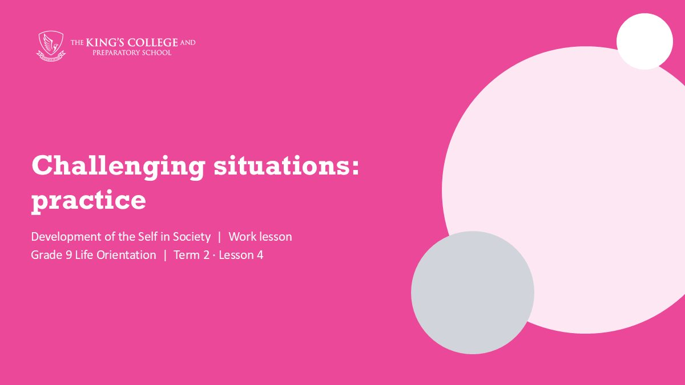

Term 2 · Lesson 4 · Work lesson: written practice
Challenging Situations: Practice
Start Here
Today I Will
- Revise mental health, grief and coping from my Handbook
- Answer IEB-style questions about a scenario, including a 4-mark answer
- Mark my work and plan how to improve
Quick quiz: name THREE signs of depression and TWO ways to support a grieving friend.
Words to Know
| Word | Meaning |
|---|---|
| Depression | Sadness or loss of interest lasting two weeks or more that affects daily life. |
| Grief | Our response to a loss. |
| Coping | What you do to deal with a difficult situation or feeling. |
| Stigma | Negative labels or shame attached to something, such as mental illness. |
Slides

Notes
This lesson revises: Term 2 · Lesson 2: When life gets hard, Term 2 · Lesson 3: Grief, loss, trauma and crisis. Read those notes first, then do the written practice.
Name the signs, choose healthy coping, and say where to get help.
Written Practice
Since Mia's parents divorced in the holidays, she and her mother have moved to a smaller flat, and Mia now sees her dad only every second weekend. For the past month she has been sleeping badly, has stopped going to netball practice, which she used to love, and often skips lunch. Her marks have dropped. When Aarav asks what is wrong, she says: 'I'm fine, I'm just tired. Don't tell anyone.' Thabo noticed that she has been posting sad song lyrics late at night.
- 5.1Define the term 'grief'.(1 x 1) (1)
- 5.2Identify TWO losses Mia has experienced.(2 x 1) (2)
- 5.3Quote TWO signs from the source that Mia may be depressed and not only stressed.(2 x 1) (2)
- 5.4Distinguish between stress and depression.(1 x 2) (2)
- 5.5Explain why Mia may say 'I'm fine' instead of asking for help.(1 x 2) (2)
- 5.6Recommend TWO healthy coping strategies for Mia. In each answer, also give the result.(2 x 2) (4)
- 5.7Aarav promised not to tell anyone. Justify why he should still tell a trusted adult, and explain how he can do it in a caring way.(1 x 3) (3)
- 5.8Evaluate the statement: 'Depression is just a phase. Teenagers should snap out of it.'(1 x 4) (4)
Finished Early?
Try a set from the Term 2 exam practice bank on the topic you find harder.
- Turn to the Term 2 exam practice bank at the back of your Activity Book.
- Choose Set B: When life gets hard, or Set C: Loss and grief.
- Answer two or three questions, using a 'whereas' answer for any 'distinguish' question.
- Mark yourself with the Term 2 exam practice memo on Google Classroom and fill in your reflection box.